Указатели, ссылки, массивы и строки
Адрес объекта, передача параметров и время жизни данных.
Указатели, массивы и строки
Указатели
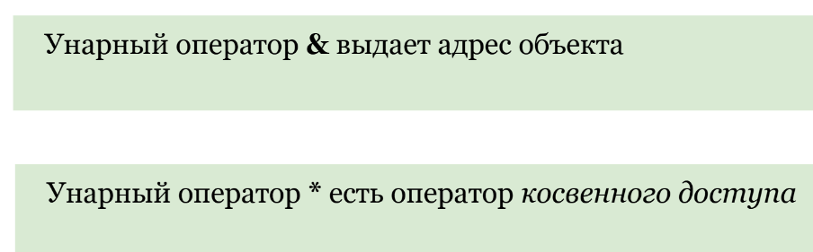
#include <iostream>
int main(){
int a = 5;
int *px = &a;
std::cout << px;
}px получает адрес переменной a. Оператор & берёт адрес объекта.
#include <iostream>
int main(){
int a = 5;
int *px = &a;
std::cout << *px;
}выводим значение указателя px
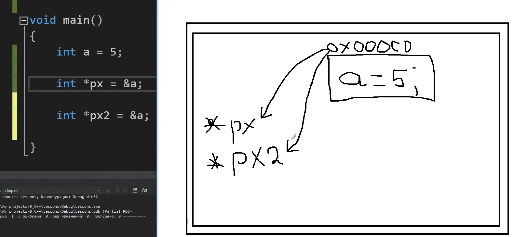
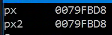
#include <iostream>
int main(){
int a = 5;
int *px = &a;
int *px2 = &a;
std::cout << *px << '\n';
*px2 = 2;
std::cout << a << '\n';
}выводим сначала значение a через указатель, а потом заменяем само а через указатель px2
#include <iostream>
int main(){
int a = 5;
int arr[5] = {1, 2, 3, 4, 5};
int *pArr = arr;
std::cout << *(pArr+3);
}выводим значение 4 элемента массива через указатели
#include <iostream>
void foo(int *pa){
(*pa)++; // сначала получаем значение потом ++
}
int main(){
int a = 1;
foo(&a);
std::cout << a;
}работа с переменной в функции
#include <iostream>
void foo(int *pa, int *px, int *pu) {
(*pa)++;
*px = 52;
*pu = 53;
}
int main(){
int a = 1;
int b = 2;
int c = 3;
foo(&a, &b, &c);
std::cout << a << " " << b << " " << c;
}передача в функцию несколько значений указателей
#include <iostream>
void foo(int *pa, int *pb) {
int temp;
temp = *pb;
*pb = *pa;
*pa = temp;
}
int main(){
int a = 1;
int b = 2;
foo(&a, &b);
std::cout << a << " " << b;
}Обмен значений через указатели
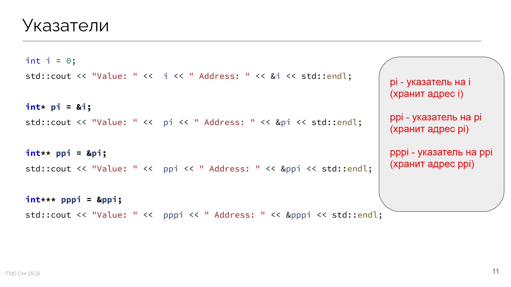
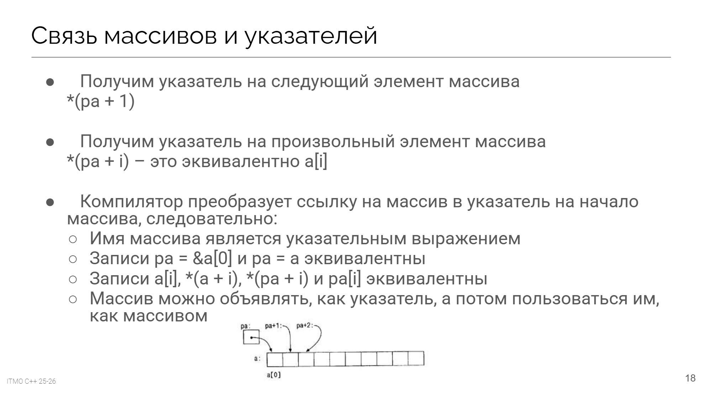
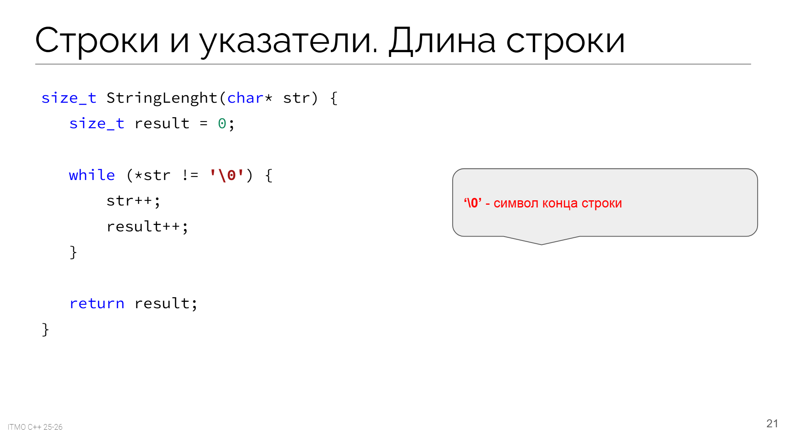
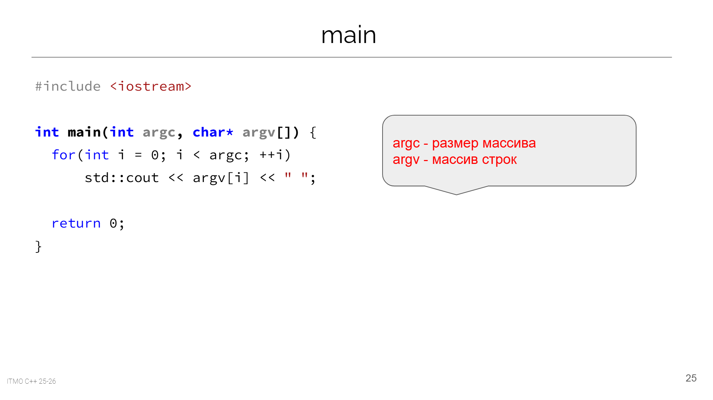
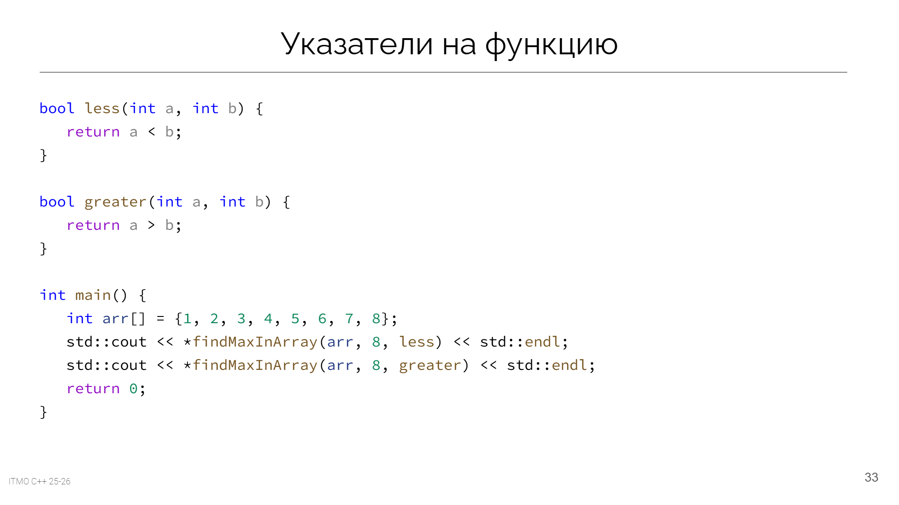
Инкремент указателя
Указатель - переменная в которой хранится адрес переменной
#include <iostream>
int main(){
int a = 52;
int* f = &a;
int* newf = &a;
std::cout << *f << " ";
*newf = 53;
std::cout << *newf;
}указатель в функции
#include <iostream>
void swap_1(int x1,int x2) {
int tmp = x2;
x2 = x1;
x1 = tmp;
}
void swap_2(int *x1,int *x2){
int tmp = *x2;
*x2 = *x1;
*x1 = tmp;
}
int main(){
int x1 = 10;
int x2 = 1;
swap_1(x1, x2);
std::cout << x1 << " " << x2;
std::cout << '\n';
swap_2(&x1, &x2);
std::cout << x1 << " " << x2;
}арифметика указателей
#include <iostream>
int main(){
int arr[5] = {1, 2, 3, 4, 5};
std::cout << *(arr + 2) << '\n'; // имя массива + двигаем указатель вправо
}Операции над указателями на элементы массива
- Прибавление целого смещения. Если
aуказывает на элемент массива,a + iуказывает на элемент со смещениемiв пределах массива либо на позицию сразу за ним. - Присваивание. Значение можно присвоить указателю совместимого типа.
- Сравнение. Указатели на элементы одного массива можно сравнивать по их позициям.
#include <iostream>
int main(){
int arr[5] = {1, 2, 3, 4, 5};
int *p_1 = arr + 3;
int *p_2 = arr;
if (p_1 > p_2){
std::cout << "OK";
}
}- Разность двух указателей внутри одного массива даёт расстояние между элементами в единицах типа элемента.
#include <iostream>
int main(){
int arr[5] = {1, 2, 3, 4, 5};
int *p_1 = arr + 3;
int *p_2 = arr;
std::cout << p_1 - p_2;
}Указатель void*
void* может хранить адрес объекта любого типа. Перед разыменованием восстановите тип указателя, соответствующий объекту.
#include <iostream>
int main(){
int x = 10;
char f = 'd';
float s = 10.78;
void* p;
p = &x;
std::cout << *(int* )p << " ";
p = &f;
std::cout << *(char* )p << " ";
p = &s;
std::cout << *(float* )p<< " ";
}Вывод строки
#include <iostream>
int main(){
const char* arr[] = {"python", "java", "c++"};
int size = sizeof(arr) / sizeof(arr[0]);
for (int i = 0; i < size; i++) {
std::cout << *(arr + i) << " ";
}
}Указатель на функцию
#include <iostream>
void swap(int *x1,int *x2){
int tmp = *x2;
*x2 = *x1;
*x1 = tmp;
}
int main(){
void (*p_swap)(int* x1, int* x2) = swap;
int x1 = 10;
int x2 = 1;
p_swap(&x1, &x2);
std::cout << x1 << " " << x2;
}Указатель на структуру struct
#include <iostream>
struct ichbin {
char name[100];
int age;
};
int main() {
struct ichbin ADD = {"Mickhail", 18};
struct ichbin *p1 = &ADD;
std::cout << p1 -> name; //доступ к элементу структуры через указатель
}Строка
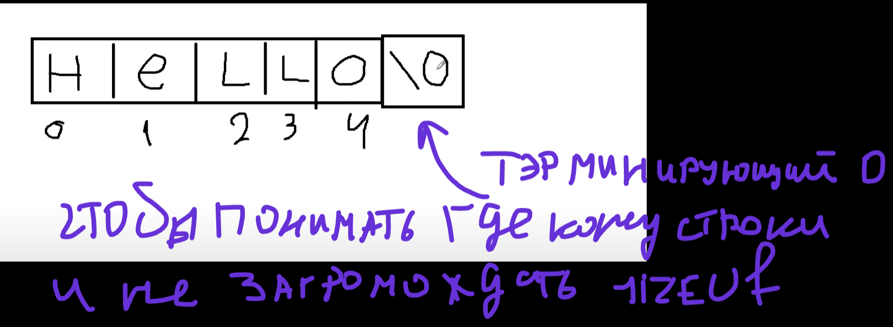
Массив
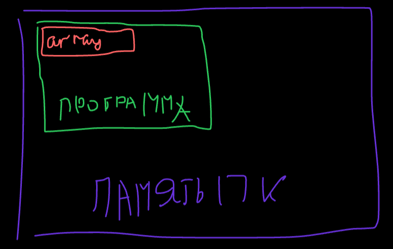
Если элементов введено меньше чем кол-во элементов на которые задан массив пустые мечта заполняются нулямиsizeof(arr) - выводит объем массива
static_cast, reinterpret_cast и приведение в стиле C
Это основное средство приведения типов, которое проверяется на этапе компиляции.
- Что делает:
- Преобразует связанные типы: например,
intвfloatилиenumвint. - Выполняет преобразования по иерархии наследования: от производного класса к базовому (upcast) и от базового к производному (downcast).
- Важно: При downcast (от родителя к потомку)
static_castне делает проверку типа во время выполнения. Если объект на самом деле не является целевым типом, возникнет неопределенное поведение. - Вызывает соответствующие конструкторы или операторы преобразования.
- Преобразует связанные типы: например,
Это низкоуровневое и потенциально опасное приведение типов.
- Что делает:
- Просто интерпретирует последовательность битов одного типа как другой тип.
- Обычно используется для преобразования указателя одного типа в указатель другого (например,
int*вchar*) или указателя в целое число и обратно. - Важно: Он не генерирует никакого кода для изменения данных, а лишь говорит компилятору смотреть на ту же память иначе.
- Не гарантирует переносимость кода между разными архитектурами.
Использование (int)a — это приведение типов в стиле языка C (C-style cast). В C++ оно считается плохой практикой, и вот почему:
- Скрытая логика (Все в одном)
Когда вы пишете (int)a, компилятор пытается применить разные преобразования в следующем порядке, пока одно из них не сработает:
const_cast(убирает константность).static_cast(логическое преобразование).static_cast+const_cast.reinterpret_cast(интерпретация битов).
Ссылки
int main(){
int a = 1;
int &aref = a;
std::cout << aref;
}Двумерный массив
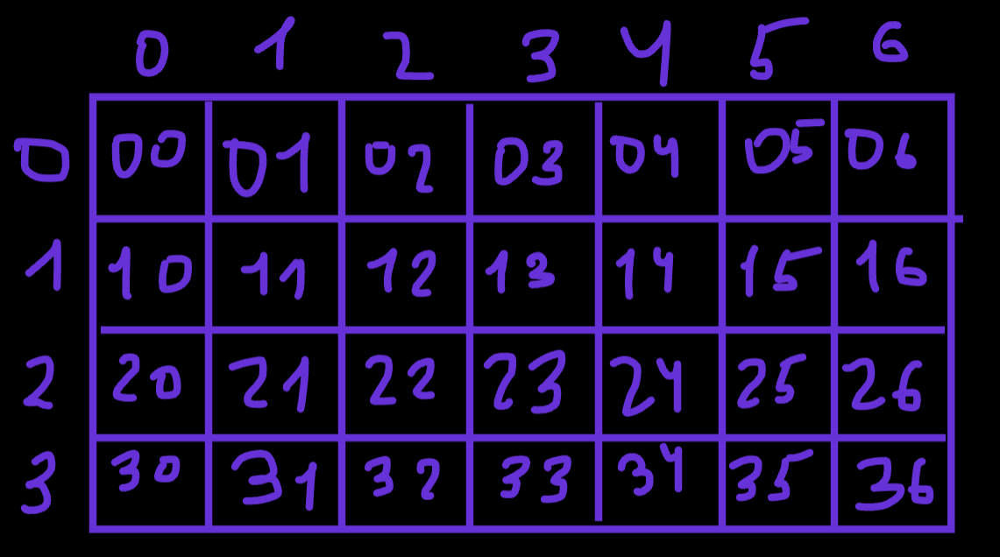